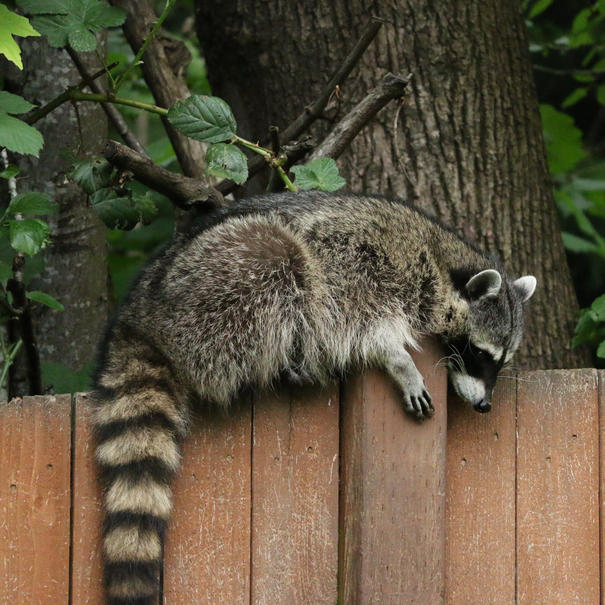

I am a raccoonThere is much many do not know about raccoons. I, for one, am very intelligent. Proof: I can open every garbage can ever. Its called garbage can, not garbage cannot.
I am everywhere!
This is me inside a tree
Here I am standing on grass
Amongst the rocks is where I hide

I am a bit on the fence here
One man's trash is another raccoon's treasure.- Me, a Raccoon
Contact me in your nearest bin!Send me the location of your best bins here!

 This is me inside a tree
This is me inside a tree
 Here I am standing on grass
Here I am standing on grass